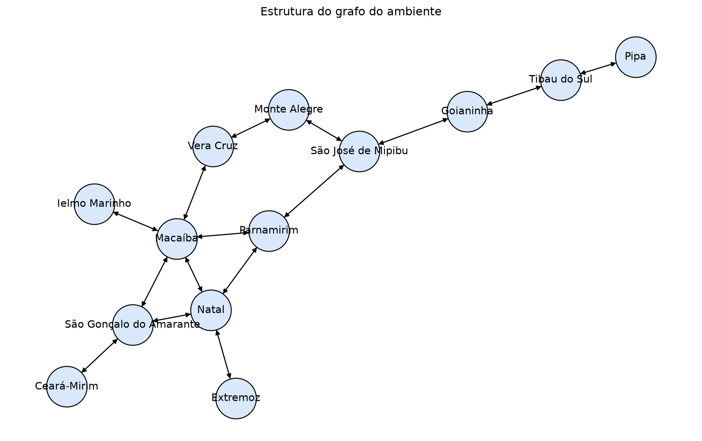

%%capture
import matplotlib.pyplot as plt
import networkx as nxLaboratório: Agentes baseados em objetivos e Métodos de Busca I
Ajustando ambiente
Motivação
O estudo de agentes baseados em objetivos e métodos de busca é fundamental na Inteligência Artificial, pois capacita os sistemas a planejarem com antecedência e a simularem sequências de ações que formam um caminho até um estado objetivo quando a atitude correta a ser tomada não é imediatamente óbvia. Nesse cenário, compreender a busca não informada é de extrema importância e forma o alicerce da resolução de problemas, já que essas estratégias operam sem qualquer conhecimento ou pista do domínio sobre a proximidade de um estado em relação ao objetivo. Ao estudar métodos não informados como a busca em largura, de custo uniforme e em profundidade, compreendemos como é possível explorar sistematicamente espaços de estados imensos ou infinitos de forma a garantir propriedades críticas, como a completude (encontrar uma solução se ela existir) e a otimização de custos. Além disso, a busca não informada nos força a lidar diretamente com o maior desafio da exploração de caminhos: a explosão combinatória e a complexidade de tempo e espaço. Estratégias não informadas, como a busca em profundidade e o aprofundamento iterativo, são consideradas as ferramentas de trabalho básicas em muitas áreas da IA justamente devido ao seu uso parcimonioso e inteligente da memória, ensinando-nos princípios essenciais de estruturas de dados e limites computacionais que preparam o terreno para atuar em ambientes desconhecidos e para o desenvolvimento de buscas heurísticas mais avançadas.
Objetivos de Aprendizagem
- Entender Agentes Baseados em Objetivos: Compreender o conceito de agentes que formulam metas e buscam planos para alcançá-las.
- Modelagem de Problemas: Aprender a modelar problemas de busca, definindo estado inicial, objetivo, ações, transições e custos.
- Compreender Métodos de Busca Não Informada:
- Busca em Largura (BFS): Entender como a BFS explora o espaço de estados nível por nível, suas propriedades de completude e otimalidade de custo.
- Busca em Profundidade (DFS): Entender como a DFS explora o espaço de estados em profundidade, suas vantagens em uso de memória e suas limitações.
- Diferenças entre BFS e DFS: Analisar as principais diferenças entre BFS e DFS em termos de estratégia de exploração, completude e otimalidade.
- Implementação de Componentes do Agente: Familiarizar-se com a estrutura de classes como
Problem,GraphProblem,Node,SimpleProblemSolvingAgentProgrameSearchAgent.
Implementação
Classes do Ambiente
A classe Problem fornece a estrutura abstrata para descrever um problema de busca, definindo conceitos como estado inicial, objetivo, ações e transições e custo. No tutorial, ela ajuda a separar o ambiente da forma como o agente raciocina sobre ele.
class Problem:
def __init__(self, initial, goal=None):
self.initial = initial
self.goal = goal
def actions(self, state):
raise NotImplementedError
def result(self, state, action):
raise NotImplementedError
def goal_test(self, state):
return state == self.goal
def path_cost(self, c, state1, action, state2):
return c + 1A partir da classe anterior, vamos extender GraphProblem a qual especializa essa formulação para o caso em que o ambiente é um grafo.
class GraphProblem(Problem):
def __init__(self, initial, goal, graph):
super().__init__(initial, goal)
self.graph = graph
def actions(self, state):
return list(self.graph.get(state).keys())
def result(self, state, action):
return action
def path_cost(self, cost_so_far, state1, action, state2):
edge_cost = self.graph.get(state1, state2)
if edge_cost is None:
return float('inf')
return cost_so_far + edge_costEm seguida, definimos a classe SimpleGraph como uma estrutura auxiliar simples para representar o ambiente em forma de grafo, que será utilizada por GraphProblem.
class SimpleGraph:
def __init__(self, graph_dict):
self.graph_dict = graph_dict
def get(self, a, b=None):
links = self.graph_dict.setdefault(a, {})
if b is None:
return links
return links.get(b)Para solucionar o processo de busca em grafos, precisamos transformá-lo em uma árvore de busca. A classe Node representa um nó da árvore de busca. Ela guarda o estado atual, o pai, a ação usada para chegar ali e a profundidade. No tutorial, essa classe permite reconstruir o caminho encontrado pelo agente durante a etapa de simulação.
class Node:
def __init__(self, state, parent=None, action=None, path_cost=0):
self.state = state
self.parent = parent
self.action = action
self.path_cost = path_cost
self.depth = 0 if parent is None else parent.depth + 1
def __repr__(self):
return '<Node {}>'.format(self.state)
def __lt__(self, node):
return self.state < node.state
def expand(self, problem):
return [self.child_node(problem, action) for action in problem.actions(self.state)]
def child_node(self, problem, action):
next_state = problem.result(self.state, action)
return Node(
next_state,
self,
action,
problem.path_cost(self.path_cost, self.state, action, next_state),
)
def solution(self):
return [node.action for node in self.path()[1:]]
def path(self):
node = self
path_back = []
while node is not None:
path_back.append(node)
node = node.parent
path_back.reverse()
return path_back
def __eq__(self, other):
return isinstance(other, Node) and self.state == other.state
def __hash__(self):
return hash(self.state)Explicação
class Node:
Define a estrutura do objeto que representará um estado dentro da árvore de busca. Diferente de um grafo puro, o nó da árvore armazena o histórico (rastro) de como o agente chegou até ali.
def __init__(self, state, parent=None, action=None, path_cost=0):
O construtor da classe. Ele inicializa os atributos fundamentais: o estado atual (
state), o nó que o gerou (parent), a ação tomada para alcançá-lo (action) e o custo total acumulado do caminho (path_cost).
self.depth = 0 if parent is None else parent.depth + 1
Calcula automaticamente a profundidade do nó. Se não houver um pai, ele é a raiz (nível 0). Caso contrário, sua profundidade será a do pai somada a 1.
def __repr__(self):
Define a representação textual do objeto. Ao imprimir o nó ou vê-lo em uma lista, ele aparecerá formatado como
<Node Natal>, facilitando o debug.
def __lt__(self, node):
Implementa o operador “menor que” (
less than). Permite comparar dois nós (usando a ordem alfabética ou valor do estado), o que é essencial para algoritmos que organizam filas de prioridade.
def expand(self, problem):
Método que gera todos os nós sucessores possíveis. Ele utiliza uma list comprehension para varrer as ações disponíveis no
probleme criar novos nós filhos.
def child_node(self, problem, action):
Cria um único nó filho específico. Ele solicita ao
problemo resultado da ação (próximo estado) e calcula o novo custo total do caminho antes de instanciar o novoNode.
def solution(self):
Extrai a sequência de ações da raiz até o nó atual. Ele fatia a lista de caminho
[1:]para ignorar o nó inicial, que não possui uma ação vinculada.
def path(self):
Reconstrói a trajetória completa. O método percorre os ponteiros de
parentde volta até a raiz, armazena-os em uma lista e depois a inverte (reverse) para exibir a ordem cronológica da viagem.
def __eq__(self, other):
Define o critério de igualdade. Dois nós são considerados iguais se forem do mesmo tipo e representarem o mesmo estado geográfico (ex: dois caminhos diferentes que terminam em “Pipa”).
def __hash__(self):
Torna o nó “mapeável”. Isso permite que o objeto seja usado em conjuntos (
set) para controle de estados visitados, evitando que o algoritmo entre em loops infinitos no mapa.
Classes de Agente
As classes SimpleProblemSolvingAgentProgram e SearchAgent estão relacionadas à parte deliberativa do agente no tutorial. A classe SimpleProblemSolvingAgentProgram define a estrutura geral de um agente baseado em objetivos: ela descreve o ciclo de perceber o estado atual, formular um objetivo, formular um problema e buscar uma sequência de ações para alcançá-lo.
class SimpleProblemSolvingAgentProgram:
def __init__(self, initial_state=None):
self.state = initial_state
self.seq = []
def __call__(self, percept):
self.state = self.update_state(self.state, percept)
if not self.seq:
goal = self.formulate_goal(self.state)
problem = self.formulate_problem(self.state, goal)
self.seq = self.search(problem)
if not self.seq:
return None
return self.seq.pop(0)
def update_state(self, state, percept):
raise NotImplementedError
def formulate_goal(self, state):
raise NotImplementedError
def formulate_problem(self, state, goal):
raise NotImplementedError
def search(self, problem):
raise NotImplementedErrorO que é um Problem-solving Agent?
O problem-solving agent (agente de resolução de problemas) é um agente baseado em objetivo. Quando a ação correta a ser tomada não é imediatamente óbvia, esse tipo de agente precisa planejar com antecedência, avaliando uma sequência de ações que formam um caminho até um estado objetivo.
Uma característica fundamental desses agentes é o uso de representações atômicas, o que significa que eles encaram os estados do mundo como um todo indivisível, sem que nenhuma estrutura interna seja visível aos algoritmos envolvidos na resolução do problema. Caso o agente utilize representações fatoradas ou estruturadas dos estados para alcançar suas metas, ele é classificado de forma diferente, sendo chamado de agente de planejamento (planning agent).A classe SearchAgent é uma implementação concreta dessa ideia, pois especializa essa estrutura para um ambiente representado por grafo e delega a geração do plano a um método de busca específico, como busca em largura ou busca em profundidade. Assim, a primeira classe fornece o modelo abstrato de raciocínio do agente, enquanto a segunda mostra como esse modelo pode ser instanciado na prática dentro do contexto do tutorial.
class SearchAgent(SimpleProblemSolvingAgentProgram):
def __init__(self, goal, search_algorithm, graph):
super().__init__(initial_state=None)
self.goal = goal
self.search_algorithm = search_algorithm
self.graph = graph
def update_state(self, state, percept):
return percept
def formulate_goal(self, state):
return self.goal
def formulate_problem(self, state, goal):
return GraphProblem(state, goal, self.graph)
def search(self, problem):
node = self.search_algorithm(problem)
if node is None:
return []
return node.solution()Funções Auxiliares
def state_path(node):
if node is None:
return None
return [step.state for step in node.path()]
def verbose(node):
if node is None:
return {
'encontrou': False,
'caminho': None,
'acoes': None,
'custo': None,
}
return {
'encontrou': True,
'caminho': state_path(node),
'acoes': node.solution(),
'custo': node.path_cost,
}
def agent_simulation(agent, initial_state, max_step=20):
state = initial_state
trajectory = [state]
actions = []
for _ in range(max_step):
action = agent(state)
if action is None:
break
actions.append(action)
state = action
trajectory.append(state)
if state == agent.goal:
break
return actions, trajectoryExemplo prático
Agora vamos aplicar essas estruturas em um ambiente simples, com um estado inicial A e um objetivo P.
Construção do Ambiente
environment = {
'Natal': {'Parnamirim': 1, 'Extremoz': 1, 'São Gonçalo do Amarante': 1, 'Macaíba': 1},
'Parnamirim': {'Natal': 1, 'São José de Mipibu': 1, 'Macaíba': 1},
'Extremoz': {'Natal': 1},
'São Gonçalo do Amarante': {'Natal': 1, 'Macaíba': 1, 'Ceará-Mirim': 1},
'Macaíba': {'Natal': 1, 'Parnamirim': 1, 'São Gonçalo do Amarante': 1, 'Ielmo Marinho': 1, 'Vera Cruz': 1},
'Ceará-Mirim': {'São Gonçalo do Amarante': 1},
'Ielmo Marinho': {'Macaíba': 1},
'Vera Cruz': {'Macaíba': 1, 'Monte Alegre': 1},
'Monte Alegre': {'Vera Cruz': 1, 'São José de Mipibu': 1},
'São José de Mipibu': {'Parnamirim': 1, 'Goianinha': 1, 'Monte Alegre': 1},
'Goianinha': {'São José de Mipibu': 1, 'Tibau do Sul': 1},
'Tibau do Sul': {'Goianinha': 1, 'Pipa': 1},
'Pipa': {'Tibau do Sul': 1}
}graph = SimpleGraph(environment)
problem = GraphProblem('Natal', 'Pipa', graph)
print('Estado inicial:', problem.initial)
print('Objetivo:', problem.goal)
print('Ações possíveis em Natal:', problem.actions('Natal'))Estado inicial: Natal
Objetivo: Pipa
Ações possíveis em Natal: ['Parnamirim', 'Extremoz', 'São Gonçalo do Amarante', 'Macaíba']# @title Estrutura do grafo
G = nx.DiGraph()
for origem, destinos in environment.items():
for destino in destinos:
G.add_edge(origem, destino)
pos = nx.spring_layout(G, seed=7)
plt.figure(figsize=(10, 6))
nx.draw(
G,
pos,
with_labels=True,
node_color='#d9e8fb',
node_size=1800,
arrows=True,
font_size=11,
edgecolors='black'
)
plt.title('Estrutura do grafo do ambiente')
plt.show()
Busca em largura
A busca em largura é uma estratégia de busca na qual o nó raiz é expandido primeiro, seguido por todos os seus nós sucessores, depois os sucessores destes, e assim por diante, explorando o espaço de estados nível por nível. O algoritmo geralmente utiliza uma estrutura de dados do tipo fila FIFO (primeiro a entrar, primeiro a sair), o que garante que os nós recém-gerados (mais profundos) vão para o final da fila e os nós mais antigos e rasos sejam expandidos primeiro. Por explorar todas as opções de uma profundidade antes de avançar para a próxima, a busca em largura é sistemática, completa e garante encontrar uma solução com o número mínimo de ações necessárias.
def breadth_first_graph_search(problem, return_expansion_order=False):
node = Node(problem.initial)
if problem.goal_test(node.state):
if return_expansion_order:
return node, [node.state]
return node
frontier = [node]
visited = set()
expansion_order = []
while frontier:
node = frontier.pop(0)
expansion_order.append(node.state)
visited.add(node.state)
for child in node.expand(problem):
if child.state not in visited and child not in frontier:
if problem.goal_test(child.state):
expansion_order.append(child.state)
if return_expansion_order:
return child, expansion_order
return child
frontier.append(child)
if return_expansion_order:
return None, expansion_order
return NoneExplicação
def breadth_first_graph_search(problem, return_expansion_order=False):
Define a função de busca em largura no grafo. O parâmetro
return_expansion_orderpermite que, além do resultado, a função retorne a lista de cidades na ordem em que foram “visitadas” pelo algoritmo.
node = Node(problem.initial)
Cria o nó raiz da árvore de busca usando o estado inicial definido no problema (ex:
'Natal').
if problem.goal_test(node.state):
Verifica imediatamente se o ponto de partida já é o destino final (o objetivo). Se for, a busca termina sem nem começar.
frontier = [node]
Inicializa a fronteira (ou borda) como uma fila (FIFO - First-In, First-Out). Na busca em largura, a fronteira garante que exploraremos todos os vizinhos de um nível antes de passar para o próximo.
visited = set()eexpansion_order = []
visitedé um conjunto que armazena estados já explorados para evitar ciclos infinitos (ex: ficar indo e voltando entre Natal e Macaíba).expansion_orderregistra a sequência cronológica da exploração.
while frontier:
Inicia o laço principal que continuará executando enquanto houver cidades na fronteira para serem exploradas.
node = frontier.pop(0)
Remove e retorna o primeiro elemento da fila. Esse comportamento de “tirar do início” é o que caracteriza a busca em largura, priorizando os nós mais rasos da árvore.
visited.add(node.state)
Adiciona a cidade atual ao conjunto de visitados, marcando que já verificamos todos os vizinhos deste local.
for child in node.expand(problem):
Expande o nó atual, gerando novos nós para todas as cidades vizinhas conectadas a ele (ex: de Natal, gera Parnamirim, Extremoz, etc.).
if child.state not in visited and child not in frontier:
Filtro de segurança: só processa o vizinho se ele ainda não foi visitado e se já não estiver na fila para ser visitado. Isso economiza memória e tempo.
if problem.goal_test(child.state):
O “teste de objetivo” é feito no momento em que o nó filho é gerado. Se o vizinho for o destino (ex:
'Pipa'), a busca é interrompida com sucesso.
frontier.append(child)
Se o vizinho não for o destino, ele é adicionado ao final da fila da fronteira para ser explorado posteriormente, após os seus “irmãos”.
return None
Se a fila da fronteira esvaziar e o objetivo não tiver sido encontrado, a função retorna
None, indicando que não há caminho possível entre as cidades no mapa fornecido.
resultado_bfs, expansoes_bfs = breadth_first_graph_search(problem, return_expansion_order=True)
print('BFS didática:', verbose(resultado_bfs))
print('Ordem de expansão BFS:', expansoes_bfs)BFS didática: {'encontrou': True, 'caminho': ['Natal', 'Parnamirim', 'São José de Mipibu', 'Goianinha', 'Tibau do Sul', 'Pipa'], 'acoes': ['Parnamirim', 'São José de Mipibu', 'Goianinha', 'Tibau do Sul', 'Pipa'], 'custo': 5}
Ordem de expansão BFS: ['Natal', 'Parnamirim', 'Extremoz', 'São Gonçalo do Amarante', 'Macaíba', 'São José de Mipibu', 'Ceará-Mirim', 'Ielmo Marinho', 'Vera Cruz', 'Goianinha', 'Monte Alegre', 'Tibau do Sul', 'Pipa']Busca em profundidade
A busca em profundidade é uma estratégia que expande sempre o nó mais profundo disponível na fronteira de busca. O algoritmo avança imediatamente para o nível mais profundo da árvore e, ao alcançar um nó sem sucessores, ele “retrocede” para o próximo nó mais profundo que ainda possui opções não exploradas. Geralmente implementada com uma estrutura de dados do tipo pilha (último a entrar, primeiro a sair), essa abordagem destaca-se pelo uso muito reduzido de memória. Contudo, ao contrário da busca em largura, ela não garante encontrar a solução de menor custo e pode ser incompleta em espaços de estados infinitos, pois corre o risco de ficar presa indefinidamente em um único caminho.
def depth_first_graph_search(problem, return_expansion_order=False):
frontier = [Node(problem.initial)]
visited = set()
expansion_order = []
while frontier:
node = frontier.pop()
expansion_order.append(node.state)
if problem.goal_test(node.state):
if return_expansion_order:
return node, expansion_order
return node
visited.add(node.state)
for child in node.expand(problem):
if child.state not in visited and child not in frontier:
frontier.append(child)
if return_expansion_order:
return None, expansion_order
return NoneExplicação
def depth_first_graph_search(problem, return_expansion_order=False):
Define a função de busca em profundidade no grafo. O objetivo aqui é explorar um ramo completo da árvore de estados até o fim antes de tentar um caminho alternativo.
frontier = [Node(problem.initial)]
Inicializa a fronteira com o nó inicial (ex:
'Natal'). Diferente da BFS, aqui a lista será tratada como uma Pilha (LIFO - Last-In, First-Out).
visited = set()eexpansion_order = []
Prepara o conjunto
visitedpara rastrear cidades já processadas e a listaexpansion_orderpara registrar a ordem em que os nós são retirados da fronteira.
while frontier:
Mantém o loop ativo enquanto houver cidades na pilha da fronteira para serem exploradas.
node = frontier.pop()
Remove e retorna o último elemento adicionado à lista. Esse é o “pulo do gato” da DFS: ao pegar sempre o último, o algoritmo mergulha verticalmente no grafo em vez de expandir horizontalmente.
expansion_order.append(node.state)
Registra a cidade que acaba de ser retirada da pilha para análise na lista de ordem de expansão.
if problem.goal_test(node.state):
Realiza o teste de objetivo. Na DFS, o teste é feito apenas quando o nó é retirado da fronteira (pop), e não quando é gerado. Se for o destino (ex:
'Pipa'), a busca para.
visited.add(node.state)
Marca o estado atual como visitado para garantir que o algoritmo não entre em looping caso encontre caminhos cíclicos no mapa do RN.
for child in node.expand(problem):
Gera os vizinhos da cidade atual. Se estivermos em Macaíba, ele gerará Vera Cruz, Ielmo Marinho, etc.
if child.state not in visited and child not in frontier:
Verifica se o vizinho já foi explorado ou se já está aguardando na pilha. Isso evita redundância e processamento desnecessário.
frontier.append(child)
Adiciona o nó filho ao topo da pilha. Como ele foi o último a entrar, será o primeiro a ser retirado no próximo ciclo do
while, forçando a exploração profunda.
return None
Se a pilha esvaziar e o objetivo nunca tiver sido alcançado, a função retorna
None, indicando que o destino é inacessível a partir da origem.
resultado_dfs, expansoes_dfs = depth_first_graph_search(problem, return_expansion_order=True)
print('DFS didática:', verbose(resultado_dfs))
print('Ordem de expansão DFS:', expansoes_dfs)DFS didática: {'encontrou': True, 'caminho': ['Natal', 'Macaíba', 'Vera Cruz', 'Monte Alegre', 'São José de Mipibu', 'Goianinha', 'Tibau do Sul', 'Pipa'], 'acoes': ['Macaíba', 'Vera Cruz', 'Monte Alegre', 'São José de Mipibu', 'Goianinha', 'Tibau do Sul', 'Pipa'], 'custo': 7}
Ordem de expansão DFS: ['Natal', 'Macaíba', 'Vera Cruz', 'Monte Alegre', 'São José de Mipibu', 'Goianinha', 'Tibau do Sul', 'Pipa']Simulação do Agente
agente_bfs = SearchAgent(goal = 'Pipa', search_algorithm = breadth_first_graph_search, graph = graph)
actions_bfs, trajetoria_bfs = agent_simulation(agente_bfs, 'Natal')
print('Agente com BFS')
print('Ações:', actions_bfs)
print('Trajetória:', trajetoria_bfs)Agente com BFS
Ações: ['Parnamirim', 'São José de Mipibu', 'Goianinha', 'Tibau do Sul', 'Pipa']
Trajetória: ['Natal', 'Parnamirim', 'São José de Mipibu', 'Goianinha', 'Tibau do Sul', 'Pipa']agente_dfs = SearchAgent(goal = 'Pipa', search_algorithm = depth_first_graph_search, graph = graph)
actions_dfs, trajetoria_dfs = agent_simulation(agente_dfs, 'Natal')
print('Agente com DFS')
print('Ações:', actions_dfs)
print('Trajetória:', trajetoria_dfs)Agente com DFS
Ações: ['Macaíba', 'Vera Cruz', 'Monte Alegre', 'São José de Mipibu', 'Goianinha', 'Tibau do Sul', 'Pipa']
Trajetória: ['Natal', 'Macaíba', 'Vera Cruz', 'Monte Alegre', 'São José de Mipibu', 'Goianinha', 'Tibau do Sul', 'Pipa']Desafio
Implemente uma versão da busca em profundidade limitada. Nessa estratégia, a exploração segue em profundidade, mas o algoritmo só pode expandir nós até uma profundidade máxima definida por limit.
Sua função deve:
- Começar no estado inicial do problema;
- Explorar os nós em profundidade;
- Impedir a expansão de nós com profundidade maior ou igual ao limite;
- Retornar o nó solução se encontrar o objetivo;
- Retornar
Nonese nenhuma solução for encontrada dentro do limite.
Use o atributo node.depth para controlar a expansão.
def depth_limited_search(problem, limit=2):
# Comece com o nó inicial na fronteira.
frontier = [Node(problem.initial)]
while frontier:
node = frontier.pop()
# Verifique se o objetivo foi encontrado.
if problem.goal_test(node.state):
return node
# Expanda o nó apenas se ele ainda estiver dentro do limite.
if node.depth < limit:
for child in node.expand(problem):
# Adicione os filhos à fronteira.
pass
return NoneKey takeways
- Um agente baseado em objetivos precisa formular um problema antes de buscar uma solução.
- BFS e DFS usam a mesma modelagem do problema, mas exploram o espaço de estados de formas diferentes.
- A solução pode ser representada como uma sequência de ações obtida a partir de um
Node. - Separar ambiente, problema e agente torna o código mais reutilizável.
Referencias
- Russell, S. & Norvig, P. (2010). Artificial Intelligence: A Modern Approach. Prentice Hall.
- Implementações clássicas de
Problem,Nodee agentes baseados em objetivos no ecossistema AIMA.